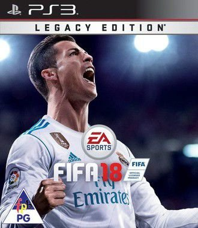
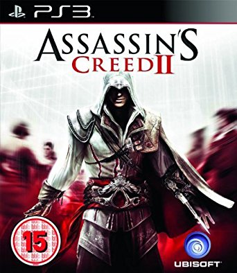

Downloads de Jogos para Playstation 3
FIFA 18 Legacy Edition

FIFA 18 traz o artilheiro histórico do Real Madrid e bicampeão europeu,
Cristiano Ronaldo, ao contrário das edições anteriores que traziam o Messi,
na capa do jogo. CR7 também faz parte da lista de craques e novos personagens
que estarão no modo jornada do game, junto a vários outros personagens de peso.
INFORMAÇÕES:
Ficha Técnica
Titulo do jogo: FIFA 18: Legacy Edition
Ano de lançamento: 2017
Idiomas: Multi
Gênero: Esporte
Tamanho: 8.76 GB
Discos: 1
Formato: PKG/EDAT/EBOOT
Plataforma: Playstation 3
Assassin’s Creed 2

No novo Assassin’s Creed, Altaïr não está mais presente.
O personagem que protagonizou o primeiro título está aproximadamente trezentos anos no passado,
e agora o protagonista é Ezio, que, por “coincidência”, é a palavra italiana para águia.
Ezio Auditore é um nobre de Florença, descendente de Altaïr, e trará para a franquia uma série de modificações.
Entre as principais estão nadar e voar (sim, voar), sendo que para esta segunda o protagonista utilizará nada
menos que a máquina voadora de Leonardo Da Vinci, uma espécie de avó da asa-delta.
INFORMAÇÕES:
Titulo do jogo: Assassin’s Creed 2
Ano de lançamento: 2009
Idiomas: Multi
Gênero: Ação, Aventura
Tamanho: 6.82 GB
Discos: 1
Formato: ISO/PKG/EDAT/EBOOT
Plataforma: Playstation 3